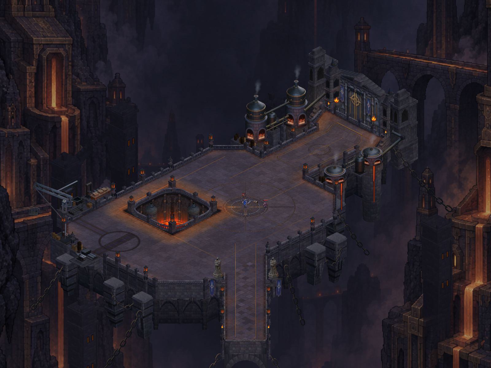
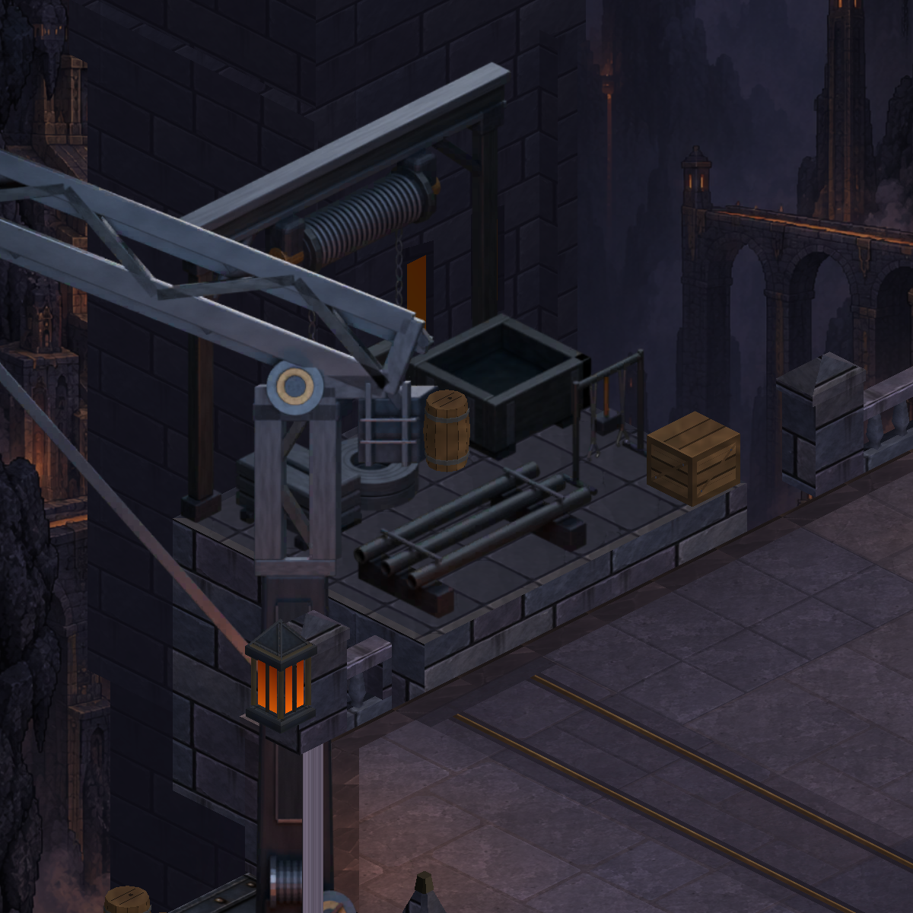
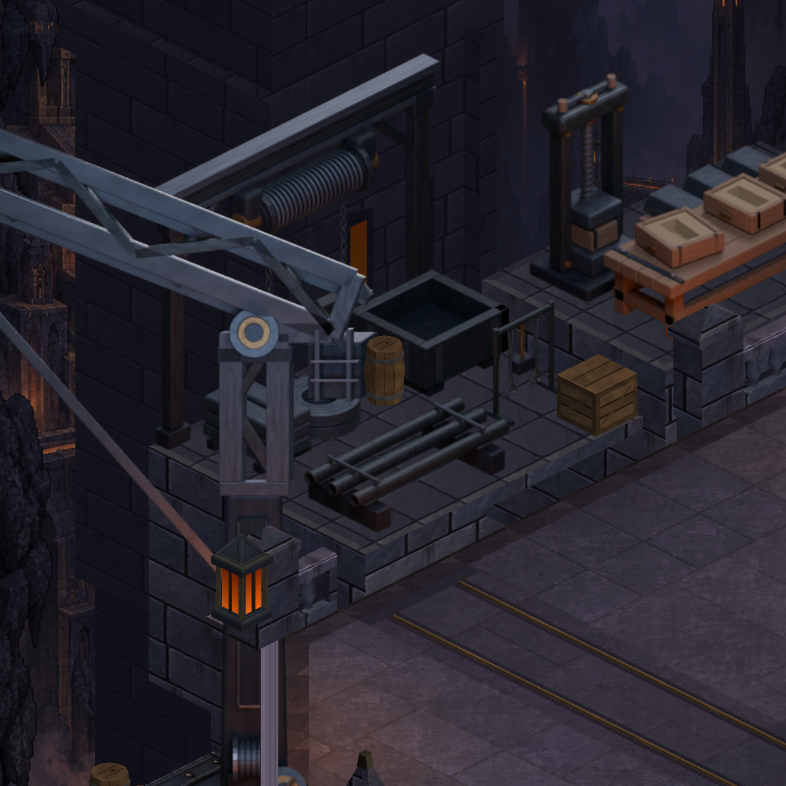
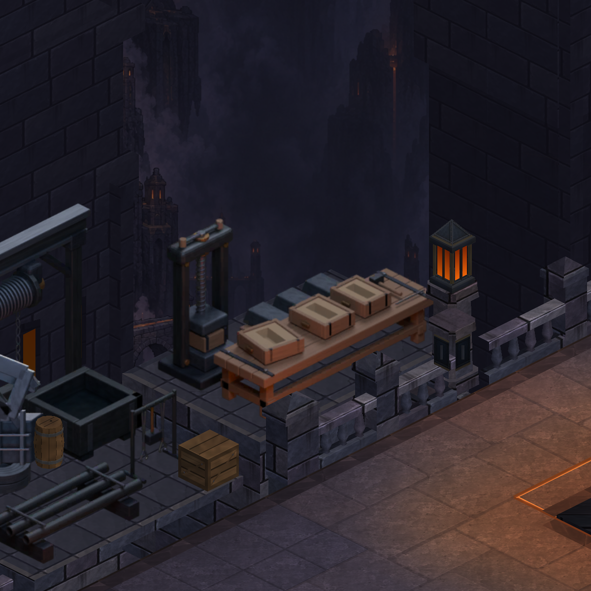
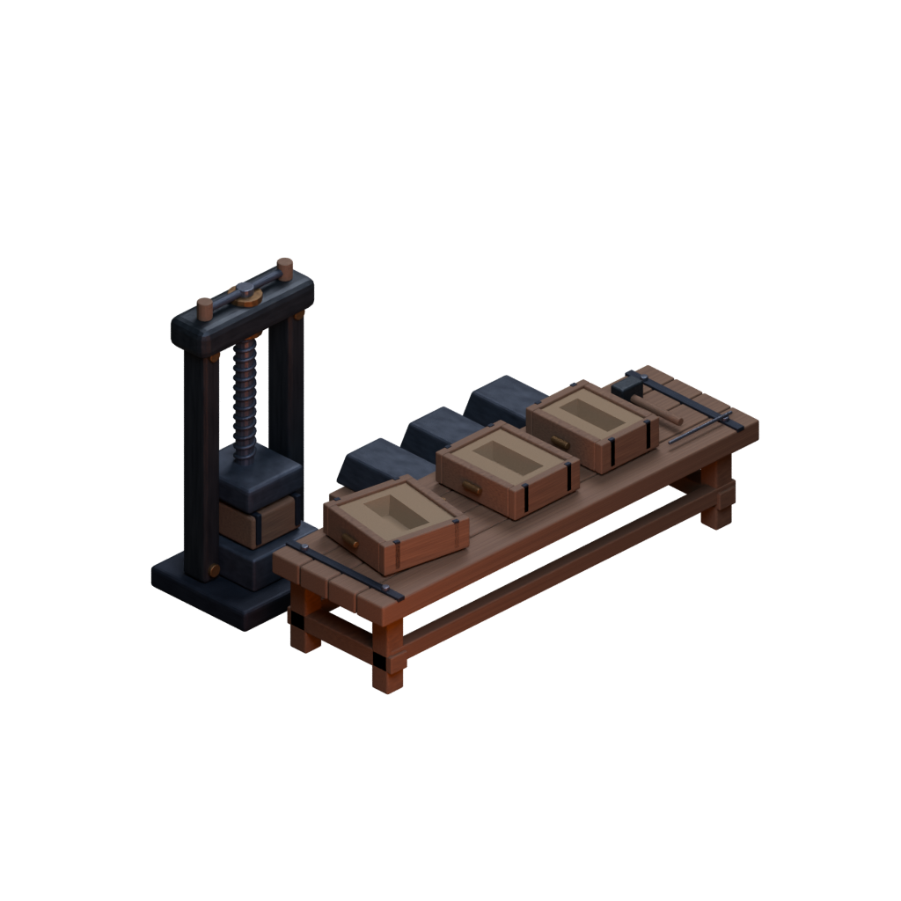
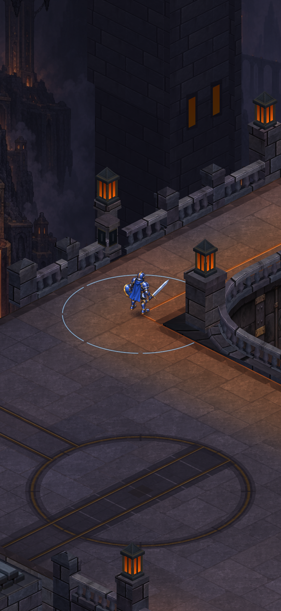
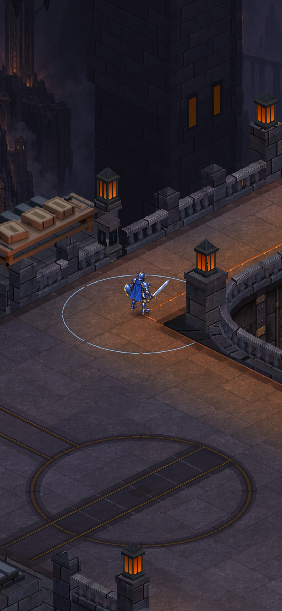
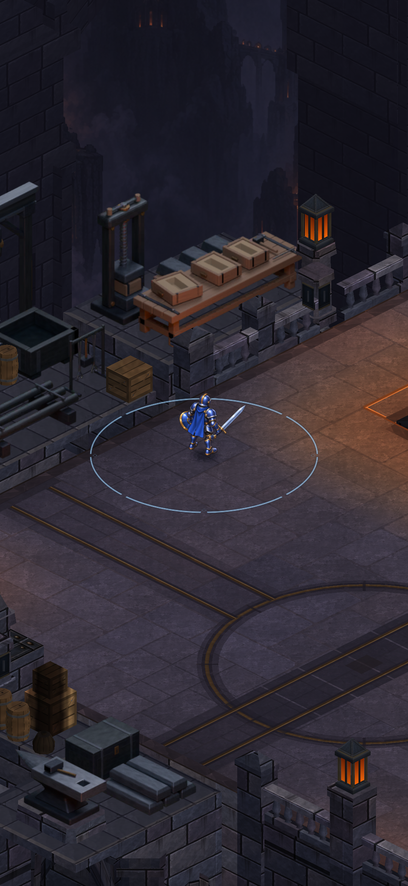

CRYPTFORGE · ACTUAL UNITY CAPTURES
Casting workbay
A hand screw press, open sand moulds and finished billets add a purposeful production station behind the north pit rim. A masonry service shelf and below-deck supports carry the equipment outside the walking boundary.
Verified: 1,009 tests passed. Actual Unity review accepted; Android APK ready. Phone installation and review pending.

After · actual Unity capture.
Working area

Before · existing stock station.
After · matching camera and scale.Authored equipment in the scene

New detail view · press, moulds and real shelf. No matched baseline for this closeup.
Editable native Blender source, rendered to a single fixed-view card.Portrait review
Production camera width, staged actor, hidden HUD. The unchanged north rail stays between the player and equipment.

Before.
After.
Additional after-only portrait · complete workbay from the north lane.Complete map · Integration and verification notes · Editable asset and projection contract